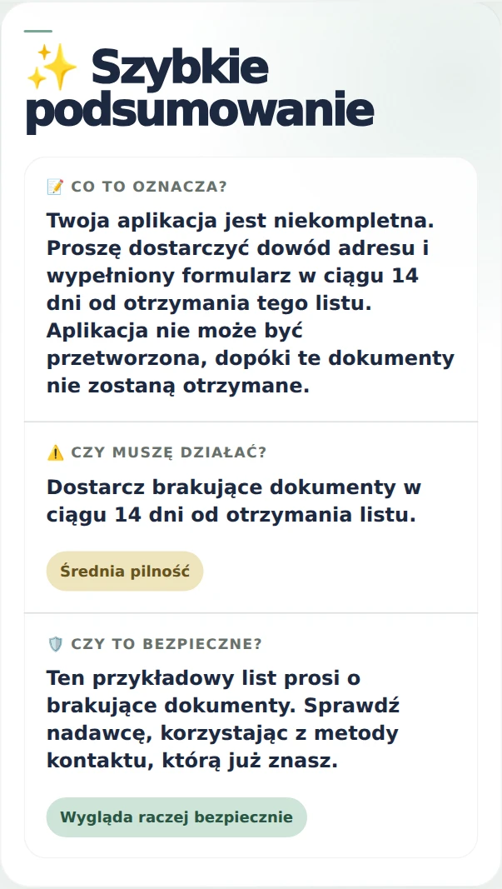
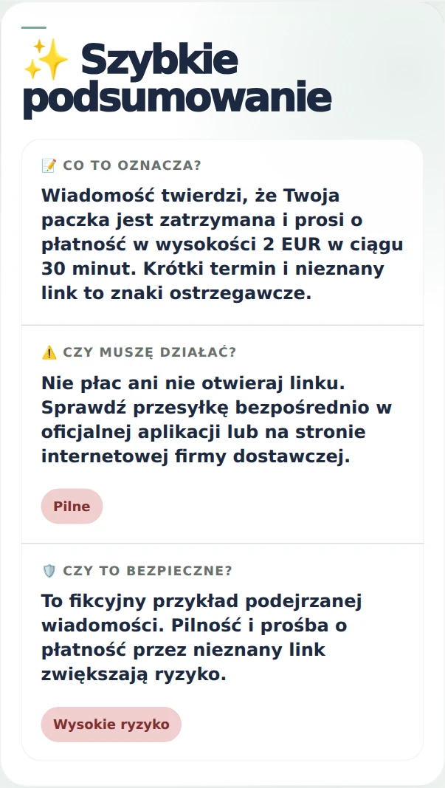
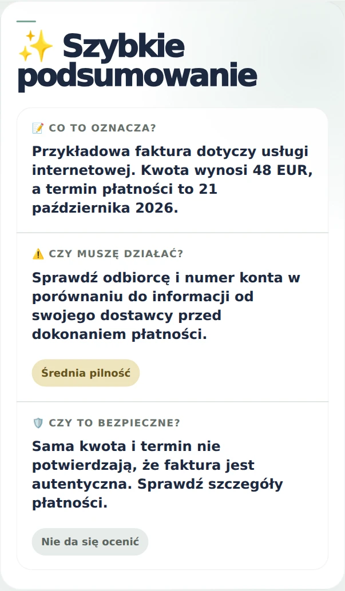
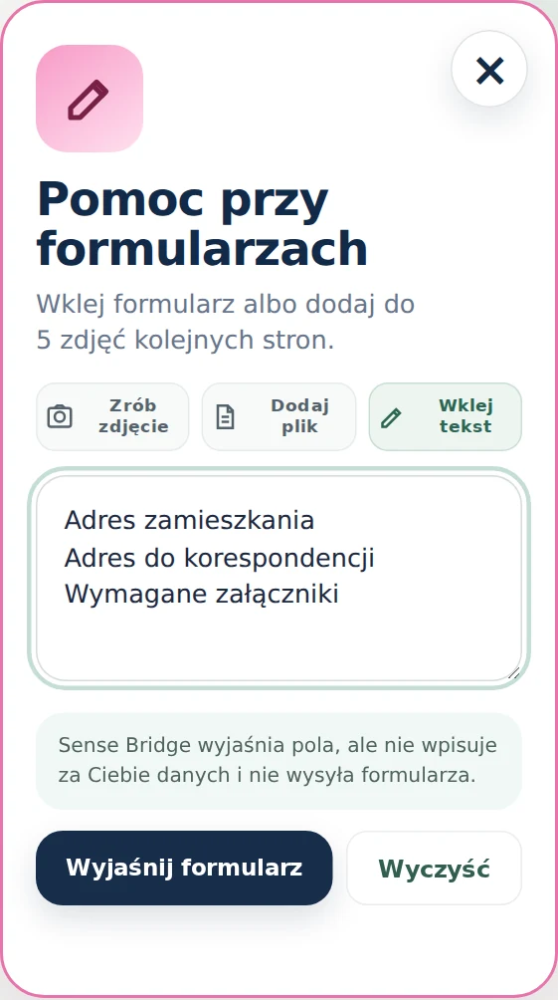

Sprawdź bezpieczeństwo
- Sprawdź zrzut ekranu
- Sprawdź link lub stronę
- Sprawdź e-mail lub SMS
W aplikacji możesz wybrać krajowy wariant języka odpowiedzi.
Sense Bridge to aplikacja, która tłumaczy i wyjaśnia pisma. Dodaj zdjęcie lub wklej tekst, żeby zrozumieć wiadomość, ważne terminy i możliwe następne kroki.
Na początek otrzymujesz 3 bezpłatne użycia.
Bitte reichen Sie einen Nachweis Ihrer Anschrift und das ausgefüllte Formular innerhalb von 14 Tagen nach Erhalt dieses Schreibens nach.
Twoja aplikacja jest niekompletna. Proszę dostarczyć dowód adresu i wypełniony formularz w ciągu 14 dni od otrzymania tego listu. Aplikacja nie może być przetworzona, dopóki te dokumenty nie zostaną otrzymane.
Najważniejsze jest zrozumienie pisma: co oznacza, jakie są terminy i co możesz zrobić. W codziennych sprawach pomogą Ci też dodatkowe funkcje.
Bez szukania w sklepie. Kilka sekund i Sense Bridge jest na ekranie telefonu.
W przeglądarce Facebooka lub Instagrama otwórz najpierw link w Safari albo Chrome. Nazwy opcji zależą od przeglądarki.
Fikcyjne sytuacje. Pokazują sposób wyjaśniania; nie są prawdziwą korespondencją.
Hausverwaltung — Wartung des Aufzugs
Am 12. November 2026 wird der Aufzug von 9:00 bis 12:00 Uhr gewartet. Bitte benutzen Sie die Treppe. Wenn Sie einen stufenlosen Zugang benötigen, kontaktieren Sie die Hausverwaltung.Winda będzie wyłączona 12 listopada 2026 od 9:00 do 12:00. Jeśli potrzebujesz dostępu bez schodów, skontaktuj się z administracją budynku.
Brak wyraźnych sygnałów oszustwaOficjalna strona do sprawdzenia
Sama treść nie potwierdza autentyczności nadawcy.
Sense Bridge pomaga znaleźć oficjalną stronę instytucji i pokazuje źródła weryfikacji. Nie oznacza to potwierdzenia autentyczności pisma.
Sense Bridge pokazuje nie tylko tłumaczenie, ale także sens pisma, ważne informacje, terminy i możliwe następne kroki.
Przykład fikcyjny. Oryginalny interfejs aplikacji pokazuje przygotowany, przetłumaczony przykład wyniku.
Musterbrief – fiktives Beispiel
Datum: 7. Oktober 2026
Betreff: Fehlende Unterlagen zu Ihrem Antrag
Sehr geehrte Damen und Herren,
Ihre Antragsunterlagen sind noch nicht vollständig. Bitte reichen Sie einen Nachweis Ihrer Anschrift und das ausgefüllte Formular innerhalb von 14 Tagen nach Erhalt dieses Schreibens nach. Ohne diese Unterlagen kann Ihr Antrag noch nicht bearbeitet werden. Bei Fragen kontaktieren Sie die zuständige Stelle über einen Ihnen bereits bekannten Kontaktweg.
Mit freundlichen Grüßen
Die SachbearbeitungPrzykład fikcyjny
Pismo informuje o brakujących dokumentach do złożonego wniosku. Prosi o dostarczenie dowodu adresu oraz wypełnionego formularza w ciągu 14 dni.
Data: 7 października 2026 Temat: Brakujące dokumenty do Państwa wniosku Szanowni Państwo, Państwa dokumenty wniosku nie są jeszcze kompletne. Prosimy o dostarczenie dowodu adresu oraz wypełnionego formularza w ciągu 14 dni od otrzymania niniejszego pisma. Bez tych dokumentów Państwa wniosek nie może być jeszcze rozpatrzony. W przypadku pytań prosimy o kontakt z odpowiednim działem za pośrednictwem znanego Państwu sposobu kontaktu. Z poważaniem, Dział obsługi klienta
Nie chodzi tylko o jeden urząd albo jeden kraj. Chodzi o zrozumienie trudnej wiadomości w obcym języku.
Sense Bridge pokazuje nie tylko tłumaczenie, ale także sens pisma, ważne informacje, terminy i możliwe następne kroki.
Otwórz aplikację ↗
Gdy SMS lub e-mail prosi o płatność, dane albo szybkie działanie, możesz najpierw sprawdzić sygnały ryzyka.
Otwórz aplikację ↗
Przy rachunku lub fakturze łatwiej zobaczysz kwoty, terminy i dane płatności oraz zrozumiesz, czego dotyczy dokument.
Otwórz aplikację ↗
Gdy formularz z urzędu, pracy albo szkoły jest trudny, Sense Bridge pomaga zrozumieć pola i przygotować potrzebne informacje.
Otwórz aplikację ↗Nie tylko tłumaczenie pisma. Sprawdzaj wiadomości i strony, analizuj dokumenty oraz przygotuj odpowiedź lub rozmowę w dwóch językach.
Wypróbuj bezpłatnieWybierz kategorię i rozwiń listę, aby zobaczyć dostępne funkcje.
Prześlij zrzut lub zdjęcie i sprawdź podejrzane ostrzeżenia, reklamy, komunikaty oraz ekrany logowania.
Sprawdź domenę, podszywanie się pod instytucję, presję czasu i sygnały typowe dla phishingu.
Zobacz, czy wiadomość wygląda wiarygodnie, czy może być próbą oszustwa, wyłudzenia danych lub fałszywej płatności.
Poznaj najważniejsze zapisy, obowiązki, terminy, wypowiedzenie, przedłużenie i punkty wymagające uwagi.
Dodaj dokument PDF i otrzymaj proste wyjaśnienie jego treści, najważniejszych informacji oraz następnych kroków.
Dodaj zdjęcie pisma lub kilku kolejnych stron, aby odczytać tekst i zrozumieć dokument.
Zrozum pola formularza, wymagane informacje i to, co warto przygotować przed jego wypełnieniem.
Przy rachunku lub fakturze łatwiej zobaczysz kwoty, terminy i dane płatności oraz zrozumiesz, czego dotyczy dokument.
Przygotuj odpowiedź w dwóch językach: przeczytaj ją po swojemu i skopiuj wersję dla odbiorcy.
Przygotuj pytania i gotowe zdania do rozmowy z urzędem, lekarzem, bankiem, szkołą lub pracodawcą.
Kroki i wynik w języku zadania oraz użytkownika.
Możliwe działania, terminy i źródła pomocy.
Sprawdź odpowiedź i źródła dalszych informacji.
Wyjaśnij warunki, wymagania i porównaj płacę z minimum.
Ten film pokazuje prawdziwy przykład: od dodania pisma po tłumaczenie, podsumowanie, ryzyko, oficjalne linki, bezpieczne kroki i narzędzia AI.
Zobacz, jak aplikacja na telefon tłumaczy i analizuje pismo w obcym języku oraz pokazuje najważniejsze informacje w prosty sposób.
Na początek otrzymujesz 3 bezpłatne użycia.
Po ich wykorzystaniu możesz wysłać prośbę o dalszy dostęp.
Prosto, jasno i bez ukrywania ważnych informacji.
Nie tworzymy archiwum Twoich pism ani nie sprzedajemy ich danych. Przesłane treści są przetwarzane tylko przez usługi niezbędne do wykonania wybranej analizy.
Sense Bridge ma charakter informacyjny i nie zastępuje prawnika ani urzędu.
W sprawach dostępu lub działania aplikacji skontaktuj się z obsługą Sense Bridge.
Obowiązuje od 10 lipca 2026 r. i dotyczy strony, aplikacji internetowej oraz aplikacji Sense Bridge na Androida.
Sense Bridge jest informacyjnym narzędziem AI pomagającym zrozumieć pisma, dokumenty, zrzuty ekranu, linki, wiadomości e-mail i SMS. Kontakt w sprawach prywatności: sensebridge.official@gmail.com
W zależności od używanej funkcji możesz przesłać tekst, zdjęcie dokumentu, zrzut ekranu, link, e-mail, SMS lub instrukcję przygotowania odpowiedzi albo rozmowy. Przesyłaj tylko informacje, których masz prawo używać, i unikaj zbędnych danych wrażliwych.
Przesłane treści są przetwarzane wyłącznie w celu wykonania żądanej analizy, wyjaśnienia, tłumaczenia, wskazania ryzyka, przygotowania przykładowej odpowiedzi lub rozmowy. Sense Bridge nie sprzedaje treści dokumentów i nie wykorzystuje ich do reklam.
Sense Bridge jest zaprojektowany tak, aby nie przechowywać treści pism, przesłanych zdjęć, zrzutów ekranu, e-maili ani SMS-ów po zakończeniu żądanego przetwarzania, z wyjątkiem tymczasowego przetwarzania technicznego potrzebnego do przekazania wyniku lub sytuacji wymaganych ze względów bezpieczeństwa, prawnych albo technicznych.
Status dostępu, liczba pozostałych darmowych użyć, wybrany język i podobne ustawienia mogą być przechowywane lokalnie na urządzeniu lub w bazie usługi, aby aplikacja działała prawidłowo.
Usługa może przetwarzać ograniczone informacje techniczne, takie jak typ urządzenia lub przeglądarki, informacje o błędach, licznik odwiedzin, adres IP w logach hostingu oraz znaczniki czasu. Dane te służą bezpieczeństwu, niezawodności, zapobieganiu nadużyciom i podstawowym statystykom.
Sense Bridge korzysta z Netlify do hostingu, funkcji serwerowych i przechowywania danych technicznych oraz z OpenAI do przetwarzania treści potrzebnych do analizy, tłumaczenia i funkcji AI. Do tych dostawców przekazywane są tylko dane potrzebne do wykonania wybranej funkcji. Sense Bridge nie sprzedaje danych osobowych ani treści dokumentów.
Sense Bridge nie sprzedaje danych osobowych. Informacje mogą być przekazywane wyłącznie dostawcom niezbędnym do działania aplikacji, gdy wymaga tego prawo albo gdy jest to konieczne do ochrony użytkowników, usługi lub innych osób przed oszustwami, nadużyciami bądź zagrożeniami bezpieczeństwa.
Gdy wybierzesz przesłanie lub sfotografowanie dokumentu, aplikacja może poprosić o dostęp do aparatu, zdjęć lub plików. Dostęp jest używany tylko do działania wybranego przez Ciebie i można go później wyłączyć w ustawieniach urządzenia.
Sense Bridge nie jest usługą kierowaną specjalnie do dzieci. Dzieci powinny korzystać z niej z udziałem rodzica lub opiekuna prawnego, jeżeli wymagają tego lokalne przepisy.
Możesz przestać korzystać z usługi, wyczyścić dane aplikacji zapisane lokalnie, odebrać uprawnienia albo skontaktować się z Sense Bridge. W zależności od miejsca zamieszkania możesz również mieć prawo do dostępu, poprawienia, usunięcia, ograniczenia przetwarzania lub wniesienia sprzeciwu. Instrukcja żądania usunięcia danych jest dostępna na stronie Usuwanie danych.
Stosowane są rozsądne środki techniczne i organizacyjne służące ochronie usługi. Żadna usługa internetowa nie może zagwarantować całkowitego bezpieczeństwa, dlatego nie przesyłaj danych, które nie są potrzebne do wykonania analizy.
Sense Bridge jest narzędziem informacyjnym. Nie udziela porad prawnych, medycznych, finansowych ani urzędowych i nie potwierdza autentyczności wiadomości lub dokumentu.
Polityka może zostać zaktualizowana, gdy zmieni się aplikacja, dostawcy usług lub wymagania prawne. Aktualna wersja będzie publikowana w tej sekcji. Pytania można wysłać na adres sensebridge.official@gmail.com.
Najważniejsze pytania bez prawniczego labiryntu.
Na początek otrzymujesz 3 bezpłatne użycia. Po ich wykorzystaniu możesz wysłać prośbę o dalszy dostęp.
Nie. Sense Bridge pomaga zrozumieć pismo i komunikację. Nie zastępuje prawnika.
Tak. Aplikacja pomaga wskazać podejrzane elementy, takie jak dziwny link, presja czasu, prośba o dane lub podszywanie się pod instytucję. To analiza ryzyka, nie potwierdzenie autentyczności.
Tak. Możesz dodać zdjęcie pisma, a aplikacja spróbuje odczytać tekst i przygotować analizę.
Bez szukania w sklepie. Kilka sekund i Sense Bridge jest na ekranie telefonu.
Sense Bridge nie tylko tłumaczy tekst. Pokazuje tłumaczenie, sens, ryzyka, pilność, podejrzane elementy i przykłady odpowiedzi.
Wybierz swój język i zobacz przykład.
Aplikacja: 235 języków i wariantów. Witryna: 24 wersje językowe.
Read short explanations in the language you prefer, then open Sense Bridge to analyze your own document.
Sense Bridge pomaga zrozumieć pisma urzędowe, wiadomości z instytucji, e-maile, decyzje, pisma ubezpieczeniowe i inne dokumenty w obcym języku. Pokazuje tłumaczenie, prawdziwy sens, pilność, ryzyko, podejrzane elementy i przykładowe odpowiedzi.
Sense Bridge helps you understand official letters, government messages, emails, decisions, insurance letters and other documents written in another language. It explains the translation, the real meaning, urgency, risks, suspicious elements and example replies.
The app is made for people living between languages. You can paste text or use a photo of a letter, then read a calm explanation in the language you understand.
Sense Bridge helpt je brieven van de Belastingdienst, UWV, gemeente, verzekeraar of werkgever beter te begrijpen. Je ziet een rustige uitleg van de betekenis, urgentie, risico’s, verdachte elementen en voorbeeldantwoorden.
Sense Bridge hilft dabei, amtliche Schreiben, E-Mails, Bescheide und Dokumente in einer anderen Sprache zu verstehen. Die App erklärt Übersetzung, Bedeutung, Dringlichkeit, Risiken, verdächtige Elemente und mögliche Antwortbeispiele.
Sense Bridge допомагає зрозуміти офіційні листи, повідомлення, рішення, документи від установ, роботодавця або страхової компанії. Додаток пояснює переклад, зміст, терміновість, ризики, підозрілі елементи та приклади відповіді.
Sense Bridge aide à comprendre les courriers officiels, e-mails, décisions, lettres d’assurance ou documents écrits dans une autre langue. L’application explique le sens, l’urgence, les risques, les éléments suspects et propose des exemples de réponse.
Sense Bridge aiuta a capire lettere ufficiali, e-mail, decisioni, documenti assicurativi o messaggi scritti in un’altra lingua. Mostra traduzione, significato, urgenza, rischi, elementi sospetti ed esempi di risposta.
Sense Bridge ayuda a entender cartas oficiales, correos, decisiones, documentos de seguros o mensajes escritos en otro idioma. Explica la traducción, el significado real, la urgencia, los riesgos, elementos sospechosos y ejemplos de respuesta.
Sense Bridge ajuda a compreender cartas oficiais, emails, decisões, documentos de seguro ou mensagens escritas noutra língua. Explica a tradução, o significado, a urgência, os riscos, elementos suspeitos e exemplos de resposta.
Naturalne opisy funkcji pomagają użytkownikom i wyszukiwarkom zrozumieć, do czego służy aplikacja.
Analiza umowy AI, wyjaśnienie dokumentu PDF, pomoc z formularzem, wyjaśnienie rachunku lub faktury, analiza zdjęcia dokumentu, sprawdzanie linku, strony internetowej, e-maila, SMS-a i zrzutu ekranu.
AI contract analysis, PDF document explanation, form help, bill or invoice explanation, photo document analysis, suspicious website check, email and SMS scam check, bilingual reply assistant and conversation preparation.
Contractanalyse met AI, PDF uitleg, hulp bij formulieren, rekening of factuur uitleg, documentfoto analyseren, verdachte link of website controleren, e-mail en sms controleren en een antwoord of gesprek voorbereiden.
Vertragsanalyse mit KI, PDF-Dokument erklären, Formularhilfe, Rechnung erklären, Dokumentfoto analysieren, verdächtigen Link oder Website prüfen, E-Mail und SMS prüfen sowie Antworten oder Gespräche vorbereiten.
AI-аналіз договору, пояснення PDF-документа, допомога з формою, пояснення рахунку або фактури, аналіз фото документа, перевірка посилання, сайту, електронного листа та SMS, підготовка відповіді або розмови.
Analyse de contrat par IA, explication de document PDF, aide pour formulaire, explication de facture, analyse de photo de document, vérification de lien ou site suspect, contrôle d’e-mail et SMS, préparation d’une réponse ou conversation.
Analisi contratto AI, spiegazione documento PDF, aiuto con moduli, spiegazione bolletta o fattura, analisi foto documento, controllo link o sito sospetto, verifica e-mail e SMS, preparazione di una risposta o conversazione.
Análisis de contratos con IA, explicación de documentos PDF, ayuda con formularios, explicación de facturas, análisis de fotos de documentos, comprobación de enlaces o sitios sospechosos, revisión de correo y SMS y preparación de respuestas o conversaciones.
Análise de contrato com IA, explicação de documento PDF, ajuda com formulários, explicação de fatura, análise de fotografia de documento, verificação de link ou site suspeito, controlo de email e SMS e preparação de resposta ou conversa.